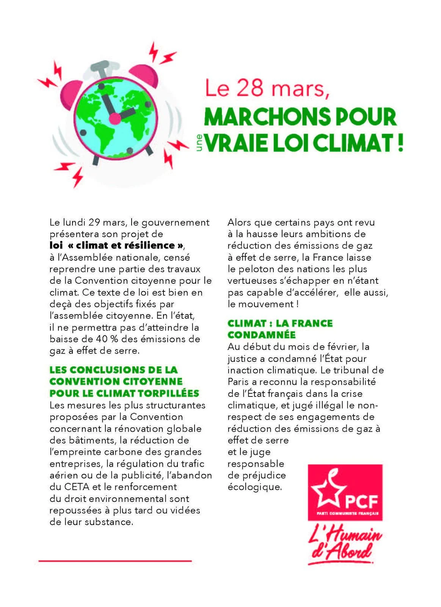
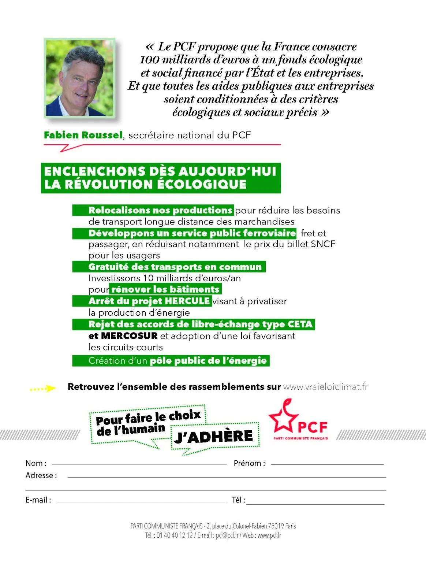

Appel archivé
28 mars 2021. Marche pour le climat à Niort
Date indiquée par Facebook · 23 mars 2021
Repères éditoriaux
Le rendez-vous de la marche était fixé à 10 h 30 place des Halles à Niort. Les visuels accompagnent l’appel.
Texte conservé avec la publication
Marche pour le Climat Dimanche 28 mars
10h30 Place des Halles à NIORT


Sources
Archive rouge · export Facebook · AR-0002-FB-02050
À lire aussi · Jour du dépassement : à partir de ce 30 juillet, l’humanité vit à crédit écologique